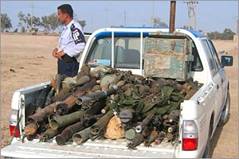

<!DOCTYPE HTML PUBLIC "-//W3C//DTD HTML 4.0 Transitional//EN">
<HTML>
<HEAD>
<link rel="shortcut icon" href="../images/favicon.ico" >
<TITLE>My Archives: April 2004</TITLE>
<META HTTP-EQUIV="Pragma" CONTENT="no-cache">
<META NAME="Generator" CONTENT="Greymatter 1.3.1">
</HEAD>

<BODY BGCOLOR="#FFFFFF">

<P ALIGN=CENTER>
<!-- SiteSearch Google 


<form method="get" action="http://www.google.com/custom" target="_top">
<table border="0" bgcolor="#ffffff">
<tr><td nowrap="nowrap" valign="top" align="left" height="32">
<a href="http://www.google.com/">
</img></a>
<br/>
<input type="hidden" name="domains" value="clairewolfe.com"></input>
<input type="text" name="q" size="31" maxlength="255" value=""></input>
<input type="submit" name="sa" value="Search"></input>
</td></tr>
<tr>
<td nowrap="nowrap">
<table>
<tr>
<td>
<input type="radio" name="sitesearch" value="" checked="checked"></input>
<font size="-1" color="#000000">Web</font>
</td>
<td>
<input type="radio" name="sitesearch" value="clairewolfe.com"></input>
<font size="-1" color="#000000">clairewolfe.com</font>
</td>
</tr>
</table>
<input type="hidden" name="client" value="pub-4022324202908779"></input>
<input type="hidden" name="forid" value="1"></input>
<input type="hidden" name="channel" value="5298382855"></input>
<input type="hidden" name="ie" value="ISO-8859-1"></input>
<input type="hidden" name="oe" value="ISO-8859-1"></input>
<input type="hidden" name="cof" value="GALT:#333333;GL:1;DIV:#37352E;VLC:000000;AH:center;BGC:C6B396;LBGC:8E866F;ALC:000000;LC:000000;T:44423A;GFNT:663333;GIMP:663333;FORID:1;"></input>
<input type="hidden" name="hl" value="en"></input>

</td></tr></table>
</form>


     SiteSearch Google -->
</P><P ALIGN=CENTER>
<FONT SIZE=4><B>WolfesBlogArchives: April 2004</B></FONT>
</P>

<BLOCKQUOTE>
<P ALIGN=LEFT>
<B>Friday, April 30, 2004</B>
</P><P ALIGN=JUSTIFY>
<b>HELP HUNTER BEAT THE OHIO INJUSTICE SYSTEM.</b> <a href="http://www.libertyroundtable.org/projects/freehunter/index.html" target="_blank">Here's how</a>. 
</P><P ALIGN=RIGHT>
Posted by <a href="../index.html" >Claire</a> @ 09:25 AM CST [<A HREF="00000742.html" onMouseOver="window.status='04/30/04: Hunter to go to trial in May -- help still needed';return true" onMouseOut="window.status='';return true">Link</A>]
</P><P ALIGN=JUSTIFY>
<b>MY <A HREF="http://www.backwoodshome.com/columns/wolfe040501.html" TARGET="_BLANK">LATEST HARDYVILLE COLUMN</a></B> is now "live" at <i>Backwoods Home</i> magazine. It's the first of a two-parter on the subject of gulching.</P><P ALIGN=JUSTIFY>I've also been asked to assure readers that the American Society for the Prevention of Cruelty to Yammerheads monitored the writing, and that no actual nerf libertarians or liberals were harmed in the making of the column.
</P><P ALIGN=RIGHT>
Posted by <a href="../index.html" >Claire</a> @ 09:09 AM CST [<A HREF="00000741.html" onMouseOver="window.status='04/30/04: Hardyville Gulch column up at <i>Backwoods Home</i>';return true" onMouseOut="window.status='';return true">Link</A>]
</P><P ALIGN=JUSTIFY>
<b>ARE THEY GETTING SCARED OF US?</B> This is the second time that some "leading" RFID industry spokesperson has <a href="http://www.zdnet.com.au/news/business/0,39023166,39146173,00.htm" target="_blank">taken a gratuitous swipe at Katherine Albrecht</a>. You don't have the truth on your side? No problem. Just smear your opponent as a religious nut who sees black helicopters swooping down on every Wal-Mart customer.</P><P ALIGN=JUSTIFY>You go, Katherine girl! Looks as if you and <a href="http://www.nocards.org/" target="_blank">CASPIAN</a> have 'em on the defensive.
</P><P ALIGN=RIGHT>
Posted by <a href="../index.html" >Claire</a> @ 09:00 AM CST [<A HREF="00000740.html" onMouseOver="window.status='04/30/04: RFID industry resorting to smears';return true" onMouseOut="window.status='';return true">Link</A>]
</P><P ALIGN=JUSTIFY>
<b>FREELANCE BLOGISPONDENT IAN MCCOLLUM HAS BEEN IN THE WOODS AGAIN.</B> This time he's brought back useful lessons about bad rifle scopes, the effects of ammo on car bodies, and the virtues of the (unbelievably cheap!) Mosin Nagant 91/30 for novice shooters.</P><P ALIGN=JUSTIFY>I love it when other people do my blogging for me and do it well (thank you Debra and Ian). But gun-geek Ian is starting to make me feel guilty about being a poor and negligent rifle shooter.  [<A HREF="00000739.html">more</A>]
</P><P ALIGN=RIGHT>
Posted by <a href="../index.html" >Claire</a> @ 08:51 AM CST [<A HREF="00000739.html" onMouseOver="window.status='04/30/04: Ian on Mosin Nagants, bad scopes, &amp; other matters';return true" onMouseOut="window.status='';return true">Link</A>]
</P><P ALIGN=LEFT>
<B>Thursday, April 29, 2004</B>
</P><P ALIGN=JUSTIFY>
<b>WHEN THE U.S. SAYS IT'S AGAINST ILLEGAL ALIENS, IT'S NOT KIDDING!</b> Debra here.  According to an article in Popular Mechanics, <a href="http://www.popularmechanics.com/science/space/2004/2/when_ufos_arrive/">our government has already put together a plan on dealing with visitors from another planet</a>.  And it ain't no "Close Encounters of the Third Kind" plan.</P><P ALIGN=JUSTIFY>Nope, our ambassadors of goodwill are planning to "whisk [the aliens] away to the Department of Agriculture's Animal Disease Center on Plum Island, ... [to be] be poked and probed by doctors from the National Institutes of Health."   To add insult to injury, we're towing away their car...er...spaceship, under the belief that it may be nuclear-powered and consequently dangerous.  </P><P ALIGN=JUSTIFY>The article concludes, "Skeptics often ask why UFO sightings seem to take place only in remote locations instead of on busy city streets. Perhaps ET knows what earthlings have in mind when it lands."
</P><P ALIGN=RIGHT>
Posted by <a href="http://www.theclairefiles.com" >Debra</a> @ 08:51 AM CST [<A HREF="00000738.html" onMouseOver="window.status='04/29/04: Pigs in Space!';return true" onMouseOut="window.status='';return true">Link</A>]
</P><P ALIGN=JUSTIFY>
<b>GITCHER GOLD</b>... and silver. Debra here. Prices have been dropping like a rock over the last few days. Silver got as low $5.56/oz yesterday, and gold was <a href="http://www.forbes.com/markets/newswire/2004/04/28/rtr1350902.html">under $390</a>.   
</P><P ALIGN=RIGHT>
Posted by <a href="http://www.theclairefiles.com" >Debra</a> @ 08:43 AM CST [<A HREF="00000737.html" onMouseOver="window.status='04/29/04: Gitcher Gold!';return true" onMouseOut="window.status='';return true">Link</A>]
</P><P ALIGN=JUSTIFY>
<b>SOMEONE HAS FINALLY <a href="http://www.vare.org.uk">STARTED A GROUP THAT OPPOSES ANIMAL RIGHTS EXTREMISTS</a></b>. It's about time.  Debra here.  While I am heartily behind the concept of Victims of Animal Rights Extremists, I am rather disgusted at their <a href="http://www.vare.org.uk/launch_pr.html">first press release</a>.<BR><blockquote><BR> "VARE exists to provide a source of mutual support for people who have been targeted by animal rights extremists <b>and to add further weight to the calls on Government to introduce new measures to deal with animal rights extremism</b>." <i>[emphasis mine]</i><BR></blockquote></P><P ALIGN=JUSTIFY>Screw calling on government.  Why don't they just carry guns? Oh wait, that's right - they're British. 
</P><P ALIGN=RIGHT>
Posted by <a href="http://www.theclairefiles.com" >Debra</a> @ 08:39 AM CST [<A HREF="00000736.html" onMouseOver="window.status='04/29/04: Anti-PETA, pro-Government';return true" onMouseOut="window.status='';return true">Link</A>]
</P><P ALIGN=JUSTIFY>
<B>THE ITALIAN GOVERNMENT MAY HAVE A LITTLE EGG ON ITS FACE</b> after seizing a shipment of "smuggled" US-bound AK-47's from a Turkish ship. Debra here.  After braying that the weapons had been "hidden" on the ship for smuggling purposes, the Italian government sheepishly disclosed that - surprise! - <a href="http://www.newsday.com/news/nationworld/wire/sns-ap-us-italy-weapons-seized,0,5522827.story">the  weapons had valid permits to be imported in the U.S</a>.</P><P ALIGN=JUSTIFY>Naturally, however, the article ends with the comment, "...authorities continue to investigate."  And even more naturally, the weapons will remain in Italy indefinitely.
</P><P ALIGN=RIGHT>
Posted by <a href="http://www.theclairefiles.com" >Debra</a> @ 08:33 AM CST [<A HREF="00000735.html" onMouseOver="window.status='04/29/04: Smuggled weapons, aren\'t.';return true" onMouseOut="window.status='';return true">Link</A>]
</P><P ALIGN=LEFT>
<B>Wednesday, April 28, 2004</B>
</P><P ALIGN=JUSTIFY>
<b>HE'S OUTGUNNED FREE SPEECH AND LYNCHED FAIR TRIALS.</b>. He's thrown dope fiends in the hoosgow by the thousands. He's tamed the Fourth Amendment and set a passel of federal persecutors on rowdy "gunslingers." Now chief lawman John Ascroft <a href="http://sfgate.com/cgi-bin/article.cgi?f=/g/a/2004/04/28/notes042804.DTL&amp;nl=fix" target="_blank">says pornography's gotta git outa town by high noon</a>. Considerin' that the man's also agin' dancin', drinkin', card playin' and even <i>caffeine</i>, mebbe you should worry what he might get up to next.</P><P ALIGN=JUSTIFY>Thanks to Rick in Germany for once again keeping a closer eye on America than most Americans do.
</P><P ALIGN=RIGHT>
Posted by <a href="../index.html" >Claire</a> @ 11:53 AM CST [<A HREF="00000734.html" onMouseOver="window.status='04/28/04: Ashcroft going after all our fun';return true" onMouseOut="window.status='';return true">Link</A>]
</P><P ALIGN=JUSTIFY>
<b><a href="http://freewest.blogspot.com/index.html#10830365965837970" target="_blank">FRAN TULLY REPORTS ON LAST WEEKEND'S GRAND WESTERN CONFERENCE II</A></B> Been looking for a good report on the conference all week and this is the best I've found, so far. </P><P ALIGN=JUSTIFY>Sorry I couldn't make it to the event, guys. I missed seeing friends -- and the <a href="http://www.sacajaweahotel.com/" target="_blank">beautiful Sacajawea Hotel</a>.
</P><P ALIGN=RIGHT>
Posted by <a href="../index.html" >Claire</a> @ 10:57 AM CST [<A HREF="00000733.html" onMouseOver="window.status='04/28/04: Fran Tully reports on the GWCII';return true" onMouseOut="window.status='';return true">Link</A>]
</P><P ALIGN=JUSTIFY>
<b>THIS ISN'T GREAT NEWS FOR FSPers ON A BUDGET.</B> Or for FSPers who crave low-key, out-of-the-way places. </P><P ALIGN=JUSTIFY>Pat Taylor, a reader of this blog, wrote a letter to <a href="http://www.backwoodshome.com/" target="_blank"><i>Backwoods Home</i> magazine</a> about the pressures a "tourism economy" could put on a rural area. A man in Coos County, New Hampshire, dropped Pat an e-note, reporting on worrying development he's seeing there. With Pat's and his permission, I've pasted his letter and its followup behind the "more" link.</P><P ALIGN=JUSTIFY>Every time one of us western <a href="http://www.freestateproject.org/" target="_blank">Free State Project</a> members frets about the perceived lack of wide open spaces in New Hampshire, some New Hampshirite inevitably says: "Coos County." Every time one of us not-exactly-rich FSPers frets about the ghastly real estate prices in New Hampshire, some New Hampshirite inevitably says: "Coos County." Although by Wyoming or Montana standards,  the spaces aren't that open or the prices that low, Coos County has become the Hope for a certain sort of FSPer. (Like my sort, for instance.) Now, gotta wonder ...</P><P ALIGN=JUSTIFY> [<A HREF="00000732.html">more</A>]
</P><P ALIGN=RIGHT>
Posted by <a href="../index.html" >Claire</a> @ 08:22 AM CST [<A HREF="00000732.html" onMouseOver="window.status='04/28/04: Not good news for FSPers on a budget';return true" onMouseOut="window.status='';return true">Link</A>]
</P><P ALIGN=LEFT>
<B>Tuesday, April 27, 2004</B>
</P><P ALIGN=JUSTIFY>
<b><A href="http://www.oregonlive.com/news/oregonian/steve_duin/index.ssf?/base/news/1082807738251705.xml" target="_blank">COPS BEATING UP OLD BLIND LADIES</A>.</B> Wow. I feel so much safer now. </P><P ALIGN=JUSTIFY>(Loxoceles_Reclusa posted this link to The Claire Files forums, and though I try not to just "borrow" news from there, I couldn't resist this column by Steve Duin. He's one of America's best under-appreciated commentators, and this tale is one of the most just plain <i>stupid</i> examples of police viciousness you'd ever want to read. Support your local cops while they beat up old blind ladies AND their 94-year old moms. Yeah ...)
</P><P ALIGN=RIGHT>
Posted by <a href="../index.html" >Claire</a> @ 01:09 PM CST [<A HREF="00000731.html" onMouseOver="window.status='04/27/04: Beating up old blind ladies';return true" onMouseOut="window.status='';return true">Link</A>]
</P><P ALIGN=JUSTIFY>
<b>LAST NIGHT I DREAMED I WAS NOMINATED FOR AN OSCAR</B> in the best supporting actress category. I knew I wouldn't win because the film I'd appeared in was a documentary. And because I was the only non-actress among the famous actress nominees. But I was just thrilled to be at the awards banquet (yes, banquet). The whole time I sat there at that glittery table, all I could think about was how eager I was to tell you folks about my nomination this morning. So there you have it. Consider yourself told. :-)</P><P ALIGN=JUSTIFY>After that, I woke, went back to sleep, and dreamed I went to San Francisco and had plastic surgery all over my whole body (although I was terribly puzzled about what I needed all that surgery for, since I thought I was fairly okay to begin with). Maybe if I'd have done that before the Oscar banquet, I'd have had a better chance ...
</P><P ALIGN=RIGHT>
Posted by <a href="../index.html" >Claire</a> @ 10:26 AM CST [<A HREF="00000730.html" onMouseOver="window.status='04/27/04: Me at the Oscars';return true" onMouseOut="window.status='';return true">Link</A>]
</P><P ALIGN=JUSTIFY>
<b>REMEMBER THAT PROPOSED BRITISH NATIONAL ID</B> we held our noses over yesterday? Now the odious home secretary Mr. Blunkett is proposing that any Brit who refuses to get one <a href="http://www.theherald.co.uk/politics/14823.html" target="_blank">should pay a pretty damn monumental £2500 fine</a>. </P><P ALIGN=JUSTIFY>Dunno whether formerly freedom-loving UK folks in general have been replaced by pod people. But I'm <i>positive</i> some of their leaders have been.
</P><P ALIGN=RIGHT>
Posted by <a href="../index.html" >Claire</a> @ 10:21 AM CST [<A HREF="00000729.html" onMouseOver="window.status='04/27/04: Huge fine for failure to accept British national ID';return true" onMouseOut="window.status='';return true">Link</A>]
</P><P ALIGN=LEFT>
<B>Monday, April 26, 2004</B>
</P><P ALIGN=JUSTIFY>
<b>NO ID? COME TO THE STATION FOR YOUR BIOMETRICS CHECK.</B> <a href="http://news.ft.com/servlet/ContentServer?pagename=FT.com/StoryFT/FullStory&amp;c=StoryFT&amp;cid=1079420600233" target="_blank">Oh, those Brits</a>. They're "ahead" of us again in tyranny planning.</P><P ALIGN=JUSTIFY>And did our history teachers really tell us these were the wonderful folks who brought us the Magna Carta and British common law, not to mention much of the background for our own Bill of Rights? Have the Brits all been replaced by pod people, or what?
</P><P ALIGN=RIGHT>
Posted by <a href="../index.html" >Claire</a> @ 12:54 PM CST [<A HREF="00000728.html" onMouseOver="window.status='04/26/04: No ID? Come to the station for your biometrics check';return true" onMouseOut="window.status='';return true">Link</A>]
</P><P ALIGN=JUSTIFY>
<b>"COUPLE SUFFERS SETBACK OVER SOCIAL SECURITY NUMBER."</B> <A HREF="http://www.dailypress.com/news/local/dp-99045sy0apr24,0,3278903.story?coll=dp-news-local-final" TARGET="_BLANK">This article has already gotten around a lot this morning</a>. A woman who believes that the social security number has become the Mark of the Beast let her driver's license expire because the DMV refused to renew the license without an SSN. Caught for speeding, she was then fined for having no license. She and her husband are now fighting that fine in the courts as a religious liberties issue. Good for them and good luck to her.</P><P ALIGN=JUSTIFY>But it's probable she could have gotten that license if she'd pressed the issue hard enough. Most states accept notarized affidavits from people who state that they don't have an SSN. And some even print those affidavits on their DMV Web sites. They do it precisely because they fear being sued on religious discrimination grounds. But you don't have to declare any religious affiliation to use the affidavits.</P><P ALIGN=JUSTIFY>'Course, you could always convert to <a href="http://billstclair.com/lodge/F_Freedonian.shtml" target="_blank">Western Sect Freedonianism</a> like I did.
</P><P ALIGN=RIGHT>
Posted by <a href="../index.html" >Claire</a> @ 12:41 PM CST [<A HREF="00000727.html" onMouseOver="window.status='04/26/04: SSN-less woman fighting ticket for no drivers license';return true" onMouseOut="window.status='';return true">Link</A>]
</P><P ALIGN=JUSTIFY>
<b><a HREF="http://sympatico.globeandmail.com/servlet/story/RTGAM.20040414.wradar0414/tech/Technology/Technology/sympatico-technology" TARGET="_BLANK">THE NATIVES ARE GETTING RESTLESS.</A></B> MysteryMan Mike sends the following news:</P><P ALIGN=JUSTIFY><blockquote>The first attack involved a newspaper box, which someone on an overpass hurled at Lois Bowes's photo radar van below. The next time it was a brick. This week it was a chunk of concrete.</P><P ALIGN=JUSTIFY>Attacks against the Edmonton Police Service's mobile photo radar units have become so prevalent — 13 in the past 13 months —— that the force is looking at fortifying the vehicles to protect their operators.</blockquote></P><P ALIGN=JUSTIFY>What's so interesting about this (aside from the fact that it's being done by those oh-so-polite Canadians) is the targets. These are manned police vans. But they're automated: click -- ticket -- click -- ticket  -- click -- ticket. That is, there's no human face on the transaction, even though there's a human being in the van. No hope to get a little mercy from an officer. No chance, either, to look in the officer's face and see a person who's got his or her own life, own worries, own needs -- a person you might want to give a break to, yourself. Just click -- ticket -- and, increasingly, SMASH!</P><P ALIGN=JUSTIFY>The article continues:</P><P ALIGN=JUSTIFY><blockquote>And where there is traffic enforcement there is rage. British police estimate that 400 mounted speed cameras have been vandalized over the past two years. In Israel, drivers have shot at the devices.</blockquote></P><P ALIGN=JUSTIFY>"Where there is traffic enforcement there is rage"? Maybe. But the point these governments and these journalists is missing is that where there is <i>faceless</i> traffic enforcement, there is <i>totally understandable alienation</i>. And the governments themselves sowed what their employees and their cameras are reaping. </P><P ALIGN=JUSTIFY>People might not like traffic tickets written by an officer by the roadside. But they perceive it as some sort of balanced transaction -- one on one. The officer may be right or may be wrong. But he has to work to catch you. He has to face you. Maybe he even has to stand out in a howling rainstorm or 100-degree sun to do it. That's fair. That's human. Everybody has a chance and a say and a viewpoint. Maybe "you can't fight city hall." But at least city hall is populated by humans and one of those humans is standing at your driver's side door.</P><P ALIGN=JUSTIFY>All the fortifications in the world aren't ultimately going to protect a government that expects to automate and dehumanize justice and to control individuals without individuality. Their "efficiency" (not to mention their crass attempts at using tickets primarily as a fundraising device) is going to hurt them in the long run -- as well it should. </P><P ALIGN=JUSTIFY>You go, Canadians! Screw 'em. (But don't aim for the van driver; being a human extension of the robot-state isn't a capital crime. Try for the camera.)
</P><P ALIGN=RIGHT>
Posted by <a href="../index.html" >Claire</a> @ 12:22 PM CST [<A HREF="00000726.html" onMouseOver="window.status='04/26/04: Attacks on mobile radar vans';return true" onMouseOut="window.status='';return true">Link</A>]
</P><P ALIGN=LEFT>
<B>Friday, April 23, 2004</B>
</P><P ALIGN=JUSTIFY>
<b>"SMUGGLING OUT OF HELL."</b> Some inspiration on the amazing <A HREF="http://www.aish.com/spirituality/odysseys/Smuggling_Out_Of_Hell.asp" TARGET="_BLANK">deeds a smart, courageous individual can accomplish</a> even in the darkest times.
</P><P ALIGN=RIGHT>
Posted by <a href="../index.html" >Claire</a> @ 12:29 PM CST [<A HREF="00000725.html" onMouseOver="window.status='04/23/04: \'Smuggling Out of Hell\'';return true" onMouseOut="window.status='';return true">Link</A>]
</P><P ALIGN=LEFT>
<B>Thursday, April 22, 2004</B>
</P><P ALIGN=JUSTIFY>
<b>TAMI SILICIO</B>, the woman who allowed a newspaper to publish <a href="http://seattletimes.nwsource.com/html/localnews/2001909527_coffin22m.html" target="blank">her very moving photo of U.S. soldiers' flag-draped coffins</a> has been fired.
</P><P ALIGN=RIGHT>
Posted by <a href="../index.html" >Claire</a> @ 12:50 PM CST [<A HREF="00000724.html" onMouseOver="window.status='04/22/04: Woman who supplied coffin photo gets fired';return true" onMouseOut="window.status='';return true">Link</A>]
</P><P ALIGN=JUSTIFY>
<b>SOMETIME IN MARCH THE SQUATTER WENT TO SLEEP IN HIS TRUCK</B> with a Dean Koontz novel on his chest. Sometime in April, a neighbor finally noticed. And by the time a sheriff's deputy opened the door of the truck, the squatter had been asleep so long in the sun that his head fell off and bounced on the ground.</P><P ALIGN=JUSTIFY>I live in a quiet little town in a quiet little county. But as Debra commented when I told her about this (after last year's rescue of animals from a murder site), "Stephen King would like your neighborhood." (And so, for that matter, would Dean Koontz.)</P><P ALIGN=JUSTIFY>The squatter had at least eight dogs. Nobody's sure. They're hard to spot and hard to count, let alone to catch, as they dart into the woods or hide in one of the horrifically trash-filled hulks of vehicles on the property. But that's where our little group of rescuers comes in. And that's where animal rescue really becomes, really and truly, rescue. </P><P ALIGN=JUSTIFY>Sensible dog writer Jon Katz has pointed out that American <a href="http://slate.msn.com/id/2083699/" target="_blank">animal lovers have become obsessed with the idea of "rescue"</a> because it makes us feel heroic. We no longer adopt animals from the pound. We rescue them from the pound. A group like the one I belong to is no longer an animal welfare group, but an animal rescue group, etc. And in a lot of circumstances, he's right. The term rescue is more drama than truth when you just pick up a stray off the street or adopt a Fido from a clean, modern low-kill shelter.</P><P ALIGN=JUSTIFY>But I'll tell you, there are times. And this is one.</P><P ALIGN=JUSTIFY>Mange, open wounds, bacterial infections, yeast infections, eye infections -- and those, apparently came <i>before</i> several weeks of being unfed. ... Frightened animals, showing long signs of abuse, cowering at the edges of our sight, hungry but too terrified to come forward. ... And over the whole scene, the miasma of corpse, even though the corpse itself is long gone. As the days get warmer, the "aroma" gets more pungent and penetrative.</P><P ALIGN=JUSTIFY>Amazingly, only one of the dogs appeared to be starving to death when we were called in. She was already almost bald and completely covered with sores and in obvious pain from some other terrible thing. So starvation was just the final, back-breaking straw. Didn't make it, that poor babe. But the others, stronger than she, must have been scrounging food somewhere. We've now captured five, and although they've probably been eating nothing but garbage for several years (thus all the skin conditions and opportunistic infections), they've at least been eating. </P><P ALIGN=JUSTIFY>They've also been in the truck cab where the squatter's body lay all those weeks. (Oh, thank you, Mr. Coroner for leaving the door open when you left.) And so we stand in the clearing amid the corpse-reek, spreading food for the shy critters. And then when we catch one we carry the corpse-reek out with us on the dog's fur until the heroic staff at the vet's office washes it away. Then we come home and throw all our clothes in the laundry and wash our hands with Clorox and sink into a bath. </P><P ALIGN=JUSTIFY>Fortunately, this has mostly been the project of two other volunteers, who -- amazingly -- have asked almost nothing of anybody. I've gone out and helped a couple of times. But those two volunteers and the vet have been real heroes. Real rescuers. </P><P ALIGN=JUSTIFY>Still, just being at the site is a strange experience.</P><P ALIGN=JUSTIFY>The reek is bearable because you can sometimes get upwind of it or hope for a cool, wet day when it's less powerful. But old vehicle hulks, piled several feet high with trash, rodent droppings, rotting food, and just general misery are harder to take because you know they're the way the man <i>lived</i>, not just the way he died. The pathetic sad-eyed dogs hiding in all that rubble are harder still to bear.</P><P ALIGN=JUSTIFY>And somehow, that Dean Koontz novel lying in the mud next to the truck amid the coroner's blue gloves and breathing filters ... somehow that just seems like the most unendurably sad thing. Seeing that hardbound book there, splayed open and face-down in the dirt and reeking like everything else around it reminds us that the squatter -- for all he was a loser, an alcoholic, maybe a druggie, and an unintentionally cruel abuser of dogs -- was a guy with a life who went to sleep one night trusting he'd wake up the next morning and having no idea what horrors he was going to leave behind him.</P><P ALIGN=JUSTIFY>
</P><P ALIGN=RIGHT>
Posted by <a href="../index.html" >Claire</a> @ 10:30 AM CST [<A HREF="00000723.html" onMouseOver="window.status='04/22/04: Sometimes it really is animal \'rescue\'';return true" onMouseOut="window.status='';return true">Link</A>]
</P><P ALIGN=JUSTIFY>
</P><P ALIGN=JUSTIFY><b><a href="http://www.foxnews.com/story/0,2933,117858,00.html" target="_blank">"GUERRILLAS AND RESIDENTS OF FALLUJAH</a></b>  had handed over only a paltry assortment of old and rusty weapons as of Thursday ...  A U.S. military general in Baghdad sent Fox News photos of old and rusty weapons that rebels handed over to the U.S. military. Marines said few weapons had been turned in and that most that had been were old or didn't work." -- Fox News
</P><P ALIGN=RIGHT>
Posted by <a href="../index.html" >Claire</a> @ 09:34 AM CST [<A HREF="00000722.html" onMouseOver="window.status='04/22/04: Fallujah citizens turn in junk weapons';return true" onMouseOut="window.status='';return true">Link</A>]
</P><P ALIGN=LEFT>
<B>Wednesday, April 21, 2004</B>
</P><P ALIGN=JUSTIFY>
<b>YOUR GOVERNMENT DOESN'T WANT YOU TO SEE</B> <A HREF="http://seattletimes.nwsource.com/ABPub/2001906044.jpg" target=_blank">images like this</a>.
</P><P ALIGN=RIGHT>
Posted by <a href="../index.html" >Claire</a> @ 02:24 PM CST [<A HREF="00000721.html" onMouseOver="window.status='04/21/04: Image from the Iraq war';return true" onMouseOut="window.status='';return true">Link</A>]
</P><P ALIGN=JUSTIFY>
<b>I WATCHED THE FIRST THREE EPISODES OF <i>FIREFLY</I> LAST NIGHT.</b> Debra loaned me the complete DVD set. </P><P ALIGN=JUSTIFY>You might know that I haven't watched TV in almost 10 years (unless you count catching the Weather Channel in motel rooms). Although Debra has kindly given me some <i>Simpsons</i> and <i>Tremors</I> fixes via tape in the past, I haven't necessarily been impressed by what I've been missing. The TV version of <I>Tremors</I>, for instance, was a ton of fun, but the production values were lower than anything that would have been broadcast even a few years back. So I didn't have high hopes for <I>Firefly</I>.</P><P ALIGN=JUSTIFY>But whooooeeee!!!!! First thing that struck me was that it was made in a wide-screen format (1.76:1, which is an oddy. What's that? Enhanced for 16:9 televisions?), with crisp images and deeply saturated color. And that thank all the gods they didn't include any damned network watermark on the DVDs. (Well, they wouldn't, of course. But I've come to associate the wretched watermark with television so strongly that it alone is often enough to turn me off to anything from TV-land. How anybody can concentrate on a show when every image is slapped with somebody's cheezy brand name, I dunno. And how any producer with a shred of aesthetic integrity would allow his images to be so fatally scarred, I also cringe to imagine.) </P><P ALIGN=JUSTIFY>Anyway, <i>Firefly</i> was visually <i>quality stuff</i>. </P><P ALIGN=JUSTIFY>Even though you could see the low budget in the sets and costumes -- damn, they made the low budget <i>work</i> by having fun turning ordinary surroundings into ordinary, low-life outer-space surroundings. </P><P ALIGN=JUSTIFY>But of course, best of all, WOWEEEEE, was this thing written by one of us??? I was prepared for some sort of mild, TV-ish, libertarian-leaning subcurrent. But holy cats, that thing was pure, subversive, blatant, anti-government an-cap from start to finish. It could have been written by somebody on <a href="http://www.thementalmilitia.org/clairefiles" target="_blank">The Claire Files forums</a>.</P><P ALIGN=JUSTIFY>Not to mention the plots were intriguing, the characters likeable (<I>especially</I> Mal, the captain -- who is very much, I suspect, the sort of person a lot of us anarcho-types would like to be in our dreams). In one episode (spoiler, spoiler), Mal -- owner of a smuggling ship on the run from government authorities -- and his crew are hired by a dangerous man to steal cargo from a train. Broke, and adhering to a kind of pirate ethic, they don't ask the nature of the cargo. They're stealing from the hated Alliance (also called "the feds") and that's good enough for them. But then, having successfully pulled off the heist (under the noses of 20 armor-clad fed agents), they learn that what they've taken is a medicine desperately needed by the hard-working people of a mining town. With much travail and risk, they return the shipment. The local "law" catches them in the act, and acknowledges the morality of the return by saying (I paraphrase), "A desperate man might take a job without asking too many questions. But when he learns what he has stolen, he has a choice ..." Mal interrupts, "I don't think he does have a choice."</P><P ALIGN=JUSTIFY>I had to play the scene a couple of times before I really grokked what Mal meant by his words. But then I just smiled blissfully.</P><P ALIGN=JUSTIFY>And they <i>cancelled</i> this show? They CANCELLED it???????? Are they effing NUTs, or what? Outa their minds. Flippin' outa their minds.</P><P ALIGN=JUSTIFY>If you're not already a <i>Firefly</i> fan, here's a <a href="http://www.dvdtimes.co.uk/content.php?contentid=11153" target="_blank">good overall review of the series</a> and the DVD set from a British publication.</P><P ALIGN=JUSTIFY>The only element that didn't ring true to me was this little gamin girly they made the ship's mechanic. She sort of "intuits" the machinery of the ship -- not with alien powers, but just with a loveable girliness. I didn't believe it for one second, and pictured real mechanics groaning at the idiocy. The actress herself is completely charming. But really -- as an engineer? Bring back Scottie! But otherwise, don't change a thing.</P><P ALIGN=JUSTIFY>And bring back this show! I understand there's <a href="http://www.hollywoodreporter.com/thr/article_display.jsp?vnu_content_id=1969026" target=:_blank">gonna be a movie</a> ...
</P><P ALIGN=RIGHT>
Posted by <a href="../index.html" >Claire</a> @ 10:07 AM CST [<A HREF="00000720.html" onMouseOver="window.status='04/21/04: Firefly -- Whooee!';return true" onMouseOut="window.status='';return true">Link</A>]
</P><P ALIGN=LEFT>
<B>Tuesday, April 20, 2004</B>
</P><P ALIGN=JUSTIFY>
<b>THE IRS WAS LAST FRIDAY'S <A HREF="http://www.nccprivacy.org/handv/040416villain.htm" TARGET="_BLANK">PRIVACY VILLAIN OF THE WEEK</A></B>. And not necessarily for the reasons we already know or suspect. Did you know that they shared personal information on taxpayers 3,744,087,686 times -- yes, that's BILLIONs, with a B -- last year? They've even been caught in the past signing up taxpayers for junk mail. Eeeew! One more reason not to "volunteer" to participate in their "service."
</P><P ALIGN=RIGHT>
Posted by <a href="../index.html" >Claire</a> @ 11:42 AM CST [<A HREF="00000719.html" onMouseOver="window.status='04/20/04: IRS the privacy villain';return true" onMouseOut="window.status='';return true">Link</A>]
</P><P ALIGN=JUSTIFY>
<b>FIRST, VERIZON FIRES THE HUNTER</b> with no stated cause and none of the required hearings. Then it demands that a Web site maintained by his friend Carl Bussjaeger be censored. Excuse me, I mean "redacted." Then, having gotten what they said they wanted, company officials still stall negotiations with Hunter and his union.</P><P ALIGN=JUSTIFY>And apparently all this is because of <a href="http://www.libertyroundtable.org/projects/freehunter/" target="_blank">Hunter getting arrested</a> (not even convicted, mind you!) for carrying a firearm, in his own time, in a manner that would have been completely legal in his home state.</P><P ALIGN=JUSTIFY>What? Does Verizon want to be a government when it grows up?</P><P ALIGN=JUSTIFY>Read Carl's news release about this latest development, behind the "more" link. [<A HREF="00000718.html">more</A>]
</P><P ALIGN=RIGHT>
Posted by <a href="../index.html" >Claire</a> @ 10:11 AM CST [<A HREF="00000718.html" onMouseOver="window.status='04/20/04: Verizon\'s ill-faith dealing with The Hunter goes on';return true" onMouseOut="window.status='';return true">Link</A>]
</P><P ALIGN=LEFT>
<B>Monday, April 19, 2004</B>
</P><P ALIGN=JUSTIFY>
<b>OH, LETS HAVE A DROP OF GOOD NEWS,</B> even if we do have to borrow it from more clever folks. The other day rockchucker posted <a href="http://www.schneier.com/crypto-gram-0205.html#5" target="_blank">this link</a> in the Hardyville section of <a href="http://www.thementalmilitia.org/clairefiles" target="_blank">The Claire Files forums</a>. I post it here for anybody who missed it. The linked article explains, in useable detail, how to fool the modern digital fingerprint readers. What I like best about the info is that it doesn't come from Loompanics, Paladin Press, or any of their ilk. It comes from Japanese cryptographer and professor Tsutomu Matsumoto, courtesy of noted security maven Bruce Schneier. The general word on "gummi fingerprints" has been around for a while. But this article gives almost step-by-step instructions for making them.
</P><P ALIGN=RIGHT>
Posted by <a href="../index.html" >Claire</a> @ 11:52 AM CST [<A HREF="00000717.html" onMouseOver="window.status='04/19/04: Fooling the fingerprint reader';return true" onMouseOut="window.status='';return true">Link</A>]
</P><P ALIGN=JUSTIFY>
<b>"THE AMERICAN TRADITION OF FAIRNESS TO PRISONERS."</B> Pat sent <a href="http://www.usatoday.com/news/washington/2004-04-18-scotus-terror_x.htm" target="_blank">this <i>USA Today</i> article</a> this morning -- about the upcoming Supreme Court cases to determine whether any of Bush's endlessly "detained" "enemy combatants" (both U.S. citizen and non-citizen) have legal rights. There's nothing particularly new in the article; it contains a surprising amount of fluff for coverage of such a serious topic. That's just the thing, though. In all her lengthy presentation of the issues, reporter Joan Biskupic never once mentions the Bill of Rights or the fact that the Bill -- the highest law of the land -- <i>requires</i> a whole raft of rights to jury trials, counsel, facing accusers, etc. Instead, all that is reduced to "the American tradition of fairness to prisoners."</P><P ALIGN=JUSTIFY><i>Tradition?</i> Excuse me. The right to a fair trial ranks slightly higher than Easter baskets or fireworks on the Fourth of July.</P><P ALIGN=JUSTIFY>The reporter also talks blandly and repeatedly about the precedents of wartime justice -- without seeming to notice that no war has been declared. Or without mentioning why it's somehow okay to get rid of civil liberties during times of trouble.</P><P ALIGN=JUSTIFY>More cheerily, Pat asks: </P><P ALIGN=JUSTIFY><blockquote>If U.S. citizens can be labeled "enemy combatants" (at President's will), does that mean we are not considered "citizens" at all? If geographical areas (of birth) can be ignored by govt., can they also be ignored by libertarians who can claim "we are not U.S. citizens, we are free citizens of the world and can live where we choose"?</blockquote></P><P ALIGN=JUSTIFY>She answers her own question, though. "That door only swings one way."</P><P ALIGN=JUSTIFY><BR>
</P><P ALIGN=RIGHT>
Posted by <a href="../index.html" >Claire</a> @ 11:35 AM CST [<A HREF="00000716.html" onMouseOver="window.status='04/19/04: \'American tradition of fairness to prisoners\'';return true" onMouseOut="window.status='';return true">Link</A>]
</P><P ALIGN=JUSTIFY>
<b><a href="http://en.wikipedia.org/wiki/April_19" target="_blank">APRIL 19</a>.</B></P><P ALIGN=JUSTIFY><a href="http://www.patriotresource.com/battles/lexington/page5.html" target="_blank">Lexington and Concord.</a></P><P ALIGN=JUSTIFY><a href="http://fcit.coedu.usf.edu/holocaust/resource/gallery/G1941WGU.htm" target="_blank">Warsaw.</a> </P><P ALIGN=JUSTIFY><A HREF="http://www.lewrockwell.com/orig5/gregory5.html" TARGET="_blank">Waco.</a></P><P ALIGN=JUSTIFY><a href="http://www.constitution.org/ocbpt/ocbpt.htm" target="_blank">Oklahoma City.</a></P><P ALIGN=JUSTIFY>Things aren't exactly improving with time.
</P><P ALIGN=RIGHT>
Posted by <a href="../index.html" >Claire</a> @ 09:14 AM CST [<A HREF="00000715.html" onMouseOver="window.status='04/19/04: April 19';return true" onMouseOut="window.status='';return true">Link</A>]
</P><P ALIGN=LEFT>
<B>Friday, April 16, 2004</B>
</P><P ALIGN=JUSTIFY>
<b>THE SCANDALOUS MISS FITZ HAS NOW HAD HER SAY.</B> Part IV of her Girls' Guide to Guns <a href=" http://www.backwoodshome.com/columns/wolfe040415.html" target="_blank">is now online at <i>Backwoods Home</i></a>. This one covers training -- what a newbie can expect to learn, where to find it, and how to (do as she says, not do as she does) keep in practice once you learn some self-defense techniques.</P><P ALIGN=JUSTIFY>Next column (May 1), Miss Fitz steps out of the picture. I plan to take up the subject of freedom communities -- and maybe explain the teaser remark I made after my trip, about the state of unorganized libertarianism being alive and well throughout the West.</P><P ALIGN=JUSTIFY><BR>
</P><P ALIGN=RIGHT>
Posted by <a href="../index.html" >Claire</a> @ 01:24 PM CST [<A HREF="00000714.html" onMouseOver="window.status='04/16/04: Miss Fitz, Part IV, now online';return true" onMouseOut="window.status='';return true">Link</A>]
</P><P ALIGN=LEFT>
<B>Thursday, April 15, 2004</B>
</P><P ALIGN=JUSTIFY>
<b>HAPPY APRIL FOOLS DAY!</b> But surprisingly, libertarian Garry Reed isn't kidding when he tells how much he <a href="http://www.freecannon.com/LoveTheIRS.htm" target="_blank">loves the IRS</a>. </P><P ALIGN=JUSTIFY>If you don't love the IRS so much, don't forget Dave Gross' simple, legal "Don't Owe Nothin'" plan for dealing with tax day and the morality of funding the ever-growing state. Here's Dave's complete eight-step plan for <a href="http://www.sniggle.net/Experiment/index.php?entry=howto" target="_blank">how to do it</a> -- including how to decide whether it's right for you.</P><P ALIGN=JUSTIFY>But of course, you being an Outlaw, you don't need to do it the legal way, either.</P><P ALIGN=JUSTIFY>Speaking of April Fools Day, I <i>do</i> think IRS Commissioner Mark Everson was foolin' when he <a href="http://www.npr.org/rundowns/segment.php?wfId=1838152" target="_Blank">said on NPR this morning</a> that the reason IRS enforcement is down is that the agency has been concentrating for the last several years on providing better "service." </P><P ALIGN=JUSTIFY>Which brings me to my offer. The first autographed copy of my upcoming book (due out late this summer) will go to the person who gives the absolute best answer to the following question: "What is the greatest service that the IRS provides me?" (With the "me" in question being you). I'll be the sole judge of the answers, and if nobody comes up with a great IRS service, I reserve the right not to award the prize. However, this is not a trick question. I'm really, really pretty darned sure one of you wags will come up with a valuable "service" you've received from the IRS-o-crats. And I'll judge entries on wit, irony, charm, and other factors as well as on any actual truthfulness that your answer might contain.</P><P ALIGN=JUSTIFY>To enter, post your response at <a href="http://www.thementalmilitia.org/clairefiles">The Claire Files forums</a>. Go to the Hardyville forum and write your take on IRS service in the "Contest: IRS Loves You" thread that I'm about to create. Contest ends May 15, 2004. Prize to be awarded once the book is published. You don't have to be American to enter!
</P><P ALIGN=RIGHT>
Posted by <a href="../index.html" >Claire</a> @ 12:05 PM CST [<A HREF="00000713.html" onMouseOver="window.status='04/15/04: Happy April Fools Day -- and an Offer';return true" onMouseOut="window.status='';return true">Link</A>]
</P><P ALIGN=LEFT>
<B>Tuesday, April 13, 2004</B>
</P><P ALIGN=JUSTIFY>
<b>^%&amp;$#@!!!!!</b> It had to happen. Let's just hope the feasibility study reveals this idiot idea to be very damned unfeasible:</P><P ALIGN=JUSTIFY><blockquote><a href="http://biz.yahoo.com/bw/040413/135113_1.html" target="_blank">PALM BEACH, Fla.--(BUSINESS WIRE)--April 13, 2004--Applied Digital Solutions, Inc.</a> (NASDAQ: ADSXD <http://finance.yahoo.com/q?s=adsxd&amp;d=t>  -<BR>News <http://finance.yahoo.com/q/h?s=adsxd> ), an advanced technology development company, announced today that its wholly owned subsidiary, VeriChip Corporation, has entered into a memorandum of understanding ("MOU") with FN Manufacturing a leading gun manufacturer to develop a first in the world of firearms. The team's objective is an integrated User Authorization System for firearms using VeriChip RFID technology. </P><P ALIGN=JUSTIFY>Located in Columbia, South Carolina, this firearms manufacturer produces small arms for military and police forces, as well as the commercial market. The company is engaged in R&amp;D efforts to study and develop various technologies (commonly referred to and understood in industry and the private sector as "smart gun") that could limit the use of a gun to one or more authorized or recognized users. </P><P ALIGN=JUSTIFY>The purpose of the MOU is for VeriChip and FN Manufacturing to evaluate the feasibility of developing a long term, strategic relationship to design, manufacture and sell a "smart gun" incorporating VeriChip's RFID technology. The team will investigate a variety of RFID tags including Implant technology. </blockquote></P><P ALIGN=JUSTIFY>Yes, they're going to investigate whether <i>you</i> should have to have a chip implant before being "allowed" to use a firearm.</P><P ALIGN=JUSTIFY>Doesn't it seem to you as though Applied Digital Solutions is involved with virtually every evil scheme that bubbles up out of the slime? Hey, you Revelation-watchers scanning the landscape for the Antichrist -- maybe you ought to turn your eyes toward Florida. While the implantable VeriChip seems to have the most dangerous potential, this company's first big product, "Digital Angel," almost seems like a theological, smack-in-the-face, aren't-we-clever Clue to those looking for the ultimate in unholiness.</P><P ALIGN=JUSTIFY>This news comes courtesy of privacy maven <a href="http://www.computerbytesman.com/" target="_blank">Richard M. Smith</a>.</P><P ALIGN=JUSTIFY>
</P><P ALIGN=RIGHT>
Posted by <a href="../index.html" >Claire</a> @ 11:58 AM CST [<A HREF="00000712.html" onMouseOver="window.status='04/13/04: Here comes the \'smart gun\'';return true" onMouseOut="window.status='';return true">Link</A>]
</P><P ALIGN=JUSTIFY>
<b><a href="http://www.nypost.com/news/regionalnews/22708.htm" target="_blank">"ASSASSIN COP NAILED IN MALL SLAY."</A></B> This one arrived with the comment, "And some say that only the government should have guns?"
</P><P ALIGN=RIGHT>
Posted by <a href="../index.html" >Claire</a> @ 10:05 AM CST [<A HREF="00000711.html" onMouseOver="window.status='04/13/04: Cop assassinates rival';return true" onMouseOut="window.status='';return true">Link</A>]
</P><P ALIGN=LEFT>
<B>Monday, April 12, 2004</B>
</P><P ALIGN=JUSTIFY>
<b>THE BEST THING ABOUT MY TRIP.</b> I was considering what that might be. I've never been a good traveler, and this was in some ways a tough trip. I drove 76 long hours during the 11 days I was gone -- some if it in white-knuckle snowstorm conditions. During the few days I stayed put, friends and I spent way too much time bundled up in a wind-blown, thunderstorm-stricken tent, trying to entertain ourselves while joking feebly about how our ancient ancestors managed to survive in their huts and yurts and teepees. But it was a fine trip -- shooting Peeps, meeting good people, seeing spectacular sights, and finding out some intriguing things -- including how remarkably well half dozen semi-strangers and five dogs could get along in taxingly intimate quarters. (Nice bunch of people, those guys.)</P><P ALIGN=JUSTIFY>Still, I was glad to get home and for a while I felt as if I'd never want to set wheels off my own road again. I wondered if my fellow travelers felt the same.</P><P ALIGN=JUSTIFY>Not until this morning did I realize what was the best thing about the trip. For 11 full, round, perfect days, I owned my own mind, with no clatter from the outside world, no competition for my own time, no mental "noise." </P><P ALIGN=JUSTIFY>The glory of it hit me only afterwards -- this morning when I started to scan through the predictable hundreds of e-messages that had piled up in my absence. Nearly all the mail contained bad news -- primarily about developments in surveillance technology, or in the political attitude that all of us must be, and deserve to be, surveilled every moment of the day. And even the friendly mail contained demands. Read this. Pay attention to that. Tell me about this. Do that. Where is thus and such? Can you help with this-or-that? Have you got a comment on blah-de-blart?</P><P ALIGN=JUSTIFY>I'm sure all that's pretty familiar to anyone who's ever returned from a vacation. Doesn't matter whether it hits you via e-mail or when you walk into your office on a post-vacation Monday. It hits you.</P><P ALIGN=JUSTIFY>But this e-hitting is still a peculiar thing. So much comes tumbling down so fast. So many urgencies. So many problems. So many needs. So many wants. And the barrage has such immediacy. <i>Pay attention to me, me, me. Right NOW, NOW, NOW!</i> Even the most demanding real-world office Monday doesn't usually quite compare in intensity to the impact of a typical e-barrage. Yet if you think about it, the most urgent e-news and e-pleas, those that scream the loudest for your awareness, are in effect very far away, very unimportant. They're exactly the things that should make the <i>least</i> demands on your real-world life. </P><P ALIGN=JUSTIFY>Strange news, coming from strangers far away. The blessing and the curse of the Internet.</P><P ALIGN=JUSTIFY>The road -- even the most boring or tense hours on the road -- put that in perspective. A snowstorm is really <i>NOW</i>. A beam of sunlight illuminating red rock is true presence. A dog needing a poop break is reality. Arriving at a place where the well water tastes like liquid silver is genuine experience. And thinking your own thoughts in your own time is ultimate balance.</P><P ALIGN=JUSTIFY>On the road, I was aware of news happening far away -- especially the grotesque horrors and political stupidities in Iraq. I listened to NPR when I could get it on the truck's radio. I saw local newspapers with their local crises. But there was nothing I could do about it all. It was just there in a world that has always been -- face it -- filled with horrors. I sorrowed for the suffering. But it wasn't my responsibility. I wanted to be aware of it. But it wasn't my experience -- thank heaven. My experience was the road and thousands of rolling miles and the grass and the snow and campfire dinners with my friends and smores and a warm dog with his head on my lap.</P><P ALIGN=JUSTIFY>As the e-mail poured down this morning, though, I had to quell a rising panic, a sense of being swept off balance by the flood of sheer information. Information somebody thought I should have. Information <i>I</i> think I should have. E-bits of artificial, mostly irrelevant information that threatened to become the reality to replace the <i>real</i> reality I'd just experienced for 11 days. I took a deep breath and didn't let myself fall off balance. Today.</P><P ALIGN=JUSTIFY>But this is a weird way to live, you know -- connected to so much of the world through electronic zips and zaps and alerts and hoaxes and musts and shoulds and <i>right nows</i>. So that was the best thing about the trip -- being away from the seduction of it, the ever-flowing current of it, the hypnotic, panicky, screaming urgency of it all for 11 days. And just being a human connected to actual, physical humans again. And dogs. And my own, lone self.</P><P ALIGN=JUSTIFY></P><P ALIGN=JUSTIFY></P><P ALIGN=JUSTIFY></P><P ALIGN=JUSTIFY>
</P><P ALIGN=RIGHT>
Posted by <a href="../index.html" >Claire</a> @ 09:53 PM CST [<A HREF="00000710.html" onMouseOver="window.status='04/12/04: Owning my own mind';return true" onMouseOut="window.status='';return true">Link</A>]
</P><P ALIGN=LEFT>
<B>Sunday, April 11, 2004</B>
</P><P ALIGN=JUSTIFY>
<b>A POST-EASTER TREAT FOR SHOOTERS. PEEPS!</B> Yeah, Peeps. You know those little marshmallow Easter-basket chicks that turn kiddies' fingers yellow and turn the stomachs of more discerning, sugar-averse adults? You can buy them 10-for-a-buck before Easter. And as of tomorrow, the day after Easter, the stores will probably pay you to take the excess inventory off their hands. Well, get 'em! Get 'em! Turns out Peeps have unimagined uses.</P><P ALIGN=JUSTIFY>Occasional blogispondent and gun geek Ian McCollum reported that Peeps made very good shooting targets. So during my spring rambles, I picked up two five-Peep packs and a group of friends and I had at them. I figured the gooey little goodies would just make spectacular splats and disappear. But no, no! Hit 'em with anything -- well, almost anything, from .22 to .45, from .223 to 7.62 x 39 -- and they'll still keep their shape (mostly). Then hit 'em again. And again. And again. Particularly with larger calibers. They'll fly into the air 10, 15, 20 feet and land where you can hit 'em one more time. It took so many shots to thoroughly kill any one Peep that we actually ended up eating (ugh!) the unblasted contents of the second package, after spending half an hour on Peep slaughter. Peeps are the most hysterical thing I've shot since Newt Gingrich sent out an 8 x 10 color glossy photo as part of a fundraising mailing, back in '96. Great fun for a group. Great lead, Ian.
</P><P ALIGN=RIGHT>
Posted by <a href="../index.html" >Claire</a> @ 10:12 PM CST [<A HREF="00000708.html" onMouseOver="window.status='04/11/04: Post-Easter target shooting with Peeps';return true" onMouseOut="window.status='';return true">Link</A>]
</P><P ALIGN=JUSTIFY>
<b>HOME.</B> Ten states. Four thousand miles. Two hundred miles of snowstorm driving (while listening to weather reports telling me it's 65 and sunny at home, grumble, grumble). Assorted thunderstorms, hailstorms, general freezing my buns off and finally dragging those sorry buns in through the Home Sweet Cabin door a couple of hours ago. But ... a good time was had by all. Me. Dog-kids, friends, and friendly strangers.</P><P ALIGN=JUSTIFY>I was hoping to have some insights to share. You'd think all those empty highway miles would inspire Great Thoughts. But no. Actually, it was great having my brain on autopilot for 11 days. No clients, no phones, no computers, no assignments, no demands. My Great Insights were things like this: Justabout every western state has a county named something like "Sweetwater." And that county is invariably as dry as freeze-dried dust. Optimism? Irony? I dunno.</P><P ALIGN=JUSTIFY>One thing I can tell you (and will try to elaborate upon later). While the state of organized libertarianism is effed as usual, the state of disorganized libertarianism, and anarcho-whateverism, and general western Don't Tread on Me kickassness ... is damn good. Damn good. I had some visits on my travels that give me hope and kept me smiling all the way home.
</P><P ALIGN=RIGHT>
Posted by <a href="../index.html" >Claire</a> @ 09:49 PM CST [<A HREF="00000707.html" onMouseOver="window.status='04/11/04: Home from my travels';return true" onMouseOut="window.status='';return true">Link</A>]
</P><P ALIGN=LEFT>
<B>Friday, April 2, 2004</B>
</P><P ALIGN=JUSTIFY>
<b>CLASSIC GOVERNMENT THINKING</b>. Debra here, subbing for Claire. Long Branch, NJ officials are using their power of eminent domain to tear down houses. Nothing new, right? After all, eminent domain is used for absolute necessities, like highways, airports, and .... newer houses?</P><P ALIGN=JUSTIFY>Yep.  <a href="http://www.nytimes.com/2004/03/31/nyregion/31domain.html?ex=1081400400&amp;en=aed0ebc3518d99c9&amp;ei=5062&amp;partner=GOOGLE">Newer houses</a>.  Apparently the old houses aren't up to snuff for the city and the current owners don't want to sell, so they're seizing them under eminent domain.  Their justification?   "Change is very difficult for anyone," says David G. Brown, the City Council's president. "It makes sense when you analyze the whole plan."</P><P ALIGN=JUSTIFY>Oh, did I mention that the properties being seized are seaside cottages? Worth a <i>serious</i> bundle? <i>Now</i> it makes sense.
</P><P ALIGN=RIGHT>
Posted by <a href="http://www.theclairefiles.com" >Debra</a> @ 08:26 AM CST [<A HREF="00000706.html" onMouseOver="window.status='04/02/04: Eminent Domain';return true" onMouseOut="window.status='';return true">Link</A>]
</P><P ALIGN=JUSTIFY>
<b>OUR PUBLIC SCHOOLS MUST BE TAKING LESSONS FROM TSA</b>. Debra here, subbing for Claire.  Several girls in a Pennsylvania school <a href="http://www.nbc5i.com/news/2948484/detail.html">were strip searched</a> after another student reported $27 missing. The money was never found. I found this quote particularly telling:</P><P ALIGN=JUSTIFY><blockquote><BR>"You tell your children to put their trust in their parents, the teachers and the police," said [parent] Ed Dusendschine. "Okay, you took two out of three away now. Now all they have is their parents. What kind of a message does that tell the kids today."<BR></blockquote></P><P ALIGN=JUSTIFY>Um, not to trust government? Sounds like a good lesson to learn, but a lousy way to learn it.
</P><P ALIGN=RIGHT>
Posted by <a href="http://www.theclairefiles.com" >Debra</a> @ 08:16 AM CST [<A HREF="00000705.html" onMouseOver="window.status='04/02/04: Girls Strip Searched at School';return true" onMouseOut="window.status='';return true">Link</A>]
</P><P ALIGN=LEFT>
<B>Thursday, April 1, 2004</B>
</P><P ALIGN=JUSTIFY>
<b>I WAS GOING TO STICK TO THREE ENTRIES TODAY</B>, honest I was. But I had to put in this amusing anecdote.  Debra here, subbing for Claire.  Yesterday apparently, <a href="http://www.reuters.com/financeNewsArticle.jhtml?type=businessNews&amp;storyID=4713594">there were rumors that Alan Greenspan had a heart attack</a>. He didn't (or so they say...), but the dollar fell anyway.</P><P ALIGN=JUSTIFY>Greenspan's like, 200 years old, right? So if mere <i>rumors</i> of an illness can cause market fluctuations, what's gonna happen when he really does go to that big NASDAQ in the sky?
</P><P ALIGN=RIGHT>
Posted by <a href="http://www.theclairefiles.com" >Debra</a> @ 08:30 AM CST [<A HREF="00000704.html" onMouseOver="window.status='04/01/04: Greenspan heart attack rumors';return true" onMouseOut="window.status='';return true">Link</A>]
</P><P ALIGN=JUSTIFY>
<b> <a href="http://www.backwoodshome.com/columns/wolfe040401.html">MISS FITZ' GUIDE TO GUNS, PART III</a></B> is up at Backwoods Home Magazine today.  Debra here, subbing for Claire today.  Part III is all about ammo. </P><P ALIGN=JUSTIFY>Mmmmm....ammo......
</P><P ALIGN=RIGHT>
Posted by <a href="http://www.theclairefiles.com" >Debra</a> @ 08:26 AM CST [<A HREF="00000703.html" onMouseOver="window.status='04/01/04: Miss Fitz\' Guide to Guns, Part III';return true" onMouseOut="window.status='';return true">Link</A>]
</P><P ALIGN=JUSTIFY>
<b>VENDORS AREN'T SURE IF RFIDs ARE WORTH IT</b>. </P><P ALIGN=JUSTIFY>Debra here, subbing for Claire today.  While Oracle Corp (run by that champion of liberty, Larry Ellison) is rolling out technology to capture the tons of data it anticipates from RFID tags, <a href="http://www.eweek.com/article2/0,1759,1559150,00.asp">vendors are wondering if the tags are even worth the time and cost</a>. </P><P ALIGN=JUSTIFY>Far from having the nickle-apiece price tag that pro-RFID groups have been positing, the tags actually cost between 40 and 50 cents each.  In addition, new hardware and software for reading the tags and storing the resulting data is required...hardware and software that isn't cheap (you didn't think Ellison was pushing this out of the goodness of his heart, did you?)  In addition, there's a decent percentage of error in the data being collected. In many cases, only 70-80% of the data is read off the tag -- even less when the item being read is made of metal, which blocks radio signals.</P><P ALIGN=JUSTIFY>In all, it looks like the RFID advocates have a ways to go before they're able to convince businesses of the value in this technology, let alone consumers.
</P><P ALIGN=RIGHT>
Posted by <a href="http://www.theclairefiles.com" >Debra</a> @ 08:22 AM CST [<A HREF="00000702.html" onMouseOver="window.status='04/01/04: A little good news on the RFID front';return true" onMouseOut="window.status='';return true">Link</A>]
</P><P ALIGN=JUSTIFY>
<b>YOU HEAR THE CLARION CALLS FOR INVESTIGATIONS</B> over the price of gas. Yet - perhaps unsurprisingly - <a href="http://www.ncpa.org/pd/economy/pd081301d.html"> in many cases, it is state politicians that are keeping gas prices high</a>.</P><P ALIGN=JUSTIFY>Debra here, subbing for Claire. I'm not talking about gasoline taxes, although those are pretty intense. Nope, these are actual laws.  According to the article, 35 states have laws that ban below-cost sales (some on gasoline specifically!), ban "predatory pricing", <i>or require a minimum markup</i>.  </P><P ALIGN=JUSTIFY>Politicians can't balance a budget to save their lives, but they can tell you what to charge for your products.</P><P ALIGN=JUSTIFY>(Thanks for the tip, MY.)
</P><P ALIGN=RIGHT>
Posted by <a href="http://www.theclairefiles.com" >Debra</a> @ 08:10 AM CST [<A HREF="00000701.html" onMouseOver="window.status='04/01/04: Low Gas Prices Illegal in 35 States';return true" onMouseOut="window.status='';return true">Link</A>]
</P>
</BLOCKQUOTE>

<P ALIGN=CENTER>
[<A HREF="blog.html">Archive Index</A>] [<A HREF="../blog.html">Main Index</A>]
</P><P ALIGN=CENTER>
<a href="http://www.greymatterforums.com/" target="_top"></a>
</P><P ALIGN=CENTER>
<B></B>
</P>

</BODY>
</HTML>